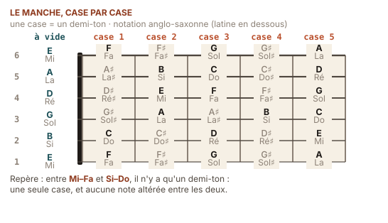
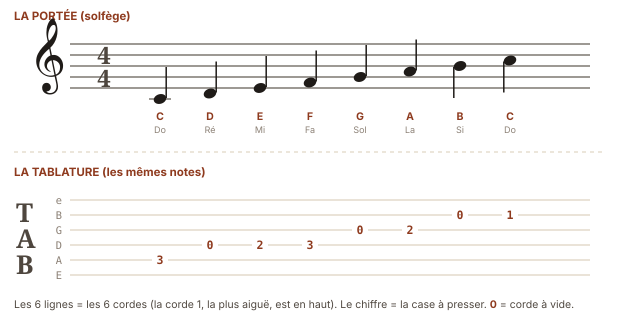
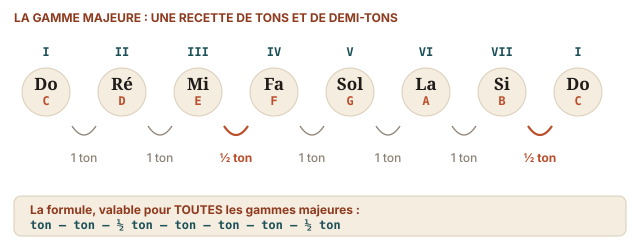

Juste assez de solfège
Do–Ré–Mi et C–D–E sont deux noms pour les mêmes sept notes.
On peut jouer de la guitare toute sa vie sans lire une note. Mais il y a un noyau minuscule de solfège — une demi-heure de lecture, pas davantage — qui change tout : comprendre pourquoi Em va bien avec G, pourquoi un accord s'appelle « mineur », et pourquoi le même accord se nomme Do ici et C là-bas. C'est exactement ce noyau qui suit. Rien de plus.
Sept notes, deux alphabets
La musique occidentale tourne autour de sept noms de notes qui reviennent en boucle. Ces sept noms s'écrivent de deux façons selon le pays, et les deux systèmes désignent strictement les mêmes sons.
| Latin (France, Italie, Espagne) | Do | Ré | Mi | Fa | Sol | La | Si |
|---|---|---|---|---|---|---|---|
| Anglo-saxon (partitions, accords, tablatures) | C | D | E | F | G | A | B |
La logique du système anglo-saxon devient limpide dès qu'on part de La = A : A B C D E F G, c'est tout simplement l'alphabet. Le point de départ est le la et non le do parce que la gamme de référence du Moyen Âge commençait là. Les Latins, eux, ont gardé les syllabes inventées au XIe siècle.
✦ Le sais-tu ?
Do, ré, mi, fa, sol, la, si sont les premières syllabes des vers d'une hymne latine à saint Jean-Baptiste, l'Ut queant laxis. Le moine italien Guido d'Arezzo, vers 1030, remarqua que chaque vers de cette hymne commençait un degré plus haut que le précédent : UT queant laxis / REsonare fibris / MIra gestorum / FAmuli tuorum / SOLve polluti / LAbii reatum. Il en fit un outil d'apprentissage — le premier au monde à permettre de chanter une mélodie sans jamais l'avoir entendue. Le « si » fut ajouté plus tard (les initiales de Sancte Iohannes), et l'inconfortable « ut » devint « do » au XVIIe siècle, probablement d'après Dominus. Neuf siècles après, tu utilises encore la fiche pédagogique d'un moine toscan.
Le détail qui explique tout : les deux demi-tons naturels
Entre deux notes voisines, l'écart est presque toujours d'un ton. Presque. Il y a exactement deux endroits dans le cycle où l'écart n'est que d'un demi-ton :
Do — Ré — Mi · Fa — Sol — La — Si · Do
Mi → Fa = ½ ton Si → Do = ½ ton
tous les autres = 1 ton
Sur la guitare, cela se voit et se touche : un demi-ton, c'est une case ; un ton, c'est deux cases. Donc entre Mi et Fa, il n'y a rien ; entre Do et Ré, il y a une case intermédiaire, qui s'appelle Do♯ ou Ré♭ selon le contexte.
✳ Le mot
Enharmonie (du grec en-, « dans », et harmonia) — le fait que deux noms différents désignent le même son. Do♯ et Ré♭ sont la même case, la même corde, le même son : on choisit l'un ou l'autre selon la tonalité du morceau, exactement comme on écrit « 3/6 » ou « 1/2 » selon le calcul en cours. Ne t'en inquiète pas pour l'instant : retiens juste que les deux écritures existent.
La carte du manche
Un manche de guitare n'est rien d'autre que ces douze demi-tons qui se répètent. À la case 12, on retrouve exactement la note de la corde à vide, une octave plus haut — c'est pour cela que le repère de la 12e case est souvent doublé.

✳ Le mot
Octave (du latin octavus, « huitième ») — l'intervalle entre une note et la note du même nom, deux fois plus aiguë. Physiquement : une fréquence exactement double (le mi grave est à 82,4 Hz, le mi de la 12e case à 164,8 Hz). C'est le seul intervalle que toutes les cultures musicales de la planète, sans exception connue, entendent comme « la même note ». Il vaut douze demi-tons, donc douze cases.
◆ Trois repères qui suffisent
N'apprends pas les 72 cases. Apprends trois colonnes : les notes à vide (E A D G B E), les notes de la 5e case (A D G C E A) et celles de la 7e (B E A D F♯ B). Avec trois points d'ancrage, tu retrouves n'importe quelle note en comptant deux ou trois cases. C'est ainsi que procèdent les guitaristes professionnels ; personne ne « voit » le manche entier d'un coup.
La portée et la tablature
Deux façons d'écrire la même musique. La portée dit quelle note ; la tablature dit où mettre les doigts. Ce guide utilise surtout la tablature, parce qu'elle est immédiate — mais tu dois reconnaître les deux.

✳ Le mot
Portée — les cinq lignes horizontales sur lesquelles
s'écrit la musique. Plus une note est haute sur la portée, plus elle est aiguë. La
clé de sol placée au début fixe le repère : elle
s'enroule autour de la 2e ligne, qui devient le sol. Particularité de la
guitare : elle est un instrument transpositeur — ce qu'on lit sonne en
réalité une octave plus bas, ce qu'indique le petit 8 sous la clé.
Tablature (de l'italien
intavolatura, « mise en tableau », XVIe siècle) —
six lignes représentant les six cordes, la 1re corde en haut. Un chiffre
sur une ligne indique la case à presser ; un 0 indique
la corde à vide. Des chiffres empilés verticalement se jouent ensemble : c'est un
accord.
Voici la même chose en tablature ASCII, la forme que tu croiseras partout sur internet et qui est utilisée dans la section 10 :
e|---0-----------|
B|-----1---------|
G|-------0-------|
D|---------2-----|
A|-----------3---|
E|---------------|
Do Ré Mi … (montée simple sur l'accord de C)
La ligne du haut est la corde la plus aiguë. On lit de gauche à droite, comme un texte.
✦ Le sais-tu ?
La tablature n'est pas une invention d'internet : elle est plus ancienne que la notation sur portée telle qu'on l'utilise aujourd'hui. Les luthistes de la Renaissance écrivaient déjà en tablature au XVIe siècle, avec des lettres au lieu de chiffres en France et en Angleterre, des chiffres en Italie et en Espagne. Le répertoire entier de John Dowland et de Luis de Milán nous est parvenu sous cette forme. Un guitariste d'aujourd'hui qui lit une tab suit donc une tradition de cinq siècles — et non un raccourci de paresseux.
La gamme majeure : la formule qui engendre les accords
Une gamme est une échelle de sept notes dans laquelle un morceau puise. La gamme majeure suit toujours la même succession d'écarts, quelle que soit la note de départ :
Ton — Ton — ½ — Ton — Ton — Ton — ½

Applique la formule à partir de Do et tu obtiens exactement les touches blanches du piano : Do Ré Mi Fa Sol La Si Do. Applique-la à partir de Sol et tu es obligé de monter le Fa d'un demi-ton pour respecter les écarts : c'est de là que vient l'unique dièse de la tonalité de sol majeur.
Pourquoi tes huit accords vont bien ensemble
Chaque degré de la gamme porte un accord, et la nature de cet accord — majeur ou mineur — est imposée par la formule. Dans toute tonalité majeure, l'ordre est invariablement le même :
| Degré | I | ii | iii | IV | V | vi | vii° |
|---|---|---|---|---|---|---|---|
| Nature | majeur | mineur | mineur | majeur | majeur | mineur | diminué |
| En do (C) | C | Dm | Em | F | G | Am | B° |
| En sol (G) | G | Am | Bm | C | D | Em | F♯° |
Regarde la ligne « en do » : C, Dm, Em, Am, G — cinq de tes huit accords, issus d'une seule tonalité. C'est pour cela qu'ils sonnent naturellement ensemble, et c'est pour cela que le programme des huit semaines les enchaîne dans cet ordre-là plutôt qu'au hasard.
✳ Le mot
Accord majeur — trois notes : la
fondamentale, la note située 4 demi-tons au-dessus (la tierce
majeure) et celle située 7 demi-tons au-dessus (la quinte). Do majeur =
Do + Mi + Sol.
Accord mineur — la même chose, mais avec la tierce
abaissée d'un demi-ton : 3 demi-tons au lieu de 4. La mineur =
La + Do + Mi. Un seul demi-ton sépare le majeur du
mineur — et c'est ce demi-ton qui sépare l'éclat de la mélancolie. Vérifie-le
toi-même : joue E, puis Em. Un seul doigt bouge d'une case, et l'humeur du monde
change.
★ Petite victoire
Joue E puis Em, lentement, trois fois. Puis A puis Am. Tu viens d'entendre, de tes propres mains, la différence majeure/mineur — la distinction la plus importante de toute la musique occidentale. Beaucoup de gens l'apprennent en théorie sans jamais la sentir ; toi, tu la tiens dans les doigts.
⚑ Défi · le détective d'accords
Prends une chanson que tu connais et dont tu as trouvé la grille en ligne. Regarde les accords : si tu y vois C, Dm, Em, F, G, Am, elle est en do majeur ; si tu y vois G, Am, Bm, C, D, Em, elle est en sol majeur. Devine la tonalité de trois chansons de ta playlist. Tu viens de faire de l'analyse harmonique.
✦ Le sais-tu ?
L'association majeur = joyeux / mineur = triste n'a rien d'universel ni de naturel : elle est une convention culturelle occidentale, solidifiée seulement au XVIIe siècle. Le flamenco andalou bâtit ses fêtes les plus exubérantes sur des modes que nous entendons comme sombres ; la musique des Balkans danse en mineur ; et le son cubain, que tu joueras en semaine 6, passe du majeur au mineur sans le moindre changement d'humeur. Garde cette liberté en tête quand tu joueras Am : rien ne t'oblige à le jouer tristement.